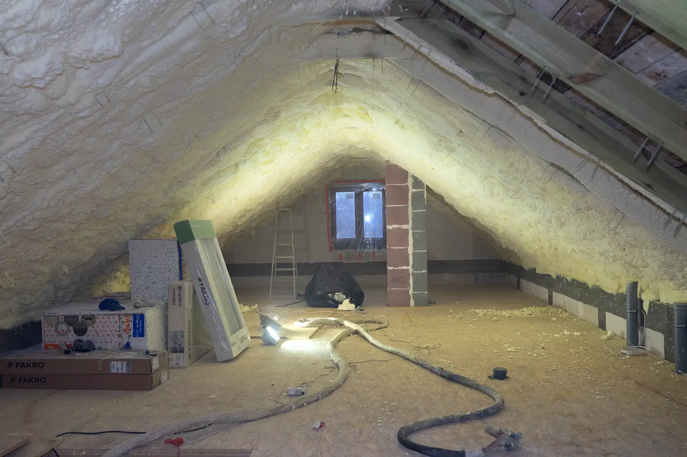

Poddasze w Suwałkach
Natrysk piany na całą połać i szczyt poddasza.

Suwałki i województwo podlaskie, także Litwa
Ocieplamy domy, poddasza, hale i budynki gospodarcze pianą Purios firmy Purinova. Piana wypełnia każdą szczelinę, więc nie zostają mostki termiczne.
Certyfikowany wykonawca PurinovaPiany otwarto- i zamkniętokomórkowe PuriosSuwałki, Augustów, Ełk, Gołdap, Białystok, Łomża i okolice
Robimy tylko izolacje natryskowe pianą PUR. Piana pieni się na ścianie, dociera w każdą szczelinę i tworzy jedną warstwę bez łączeń i spoin. Najedź na przekrój albo wybierz z listy.
Pianę natryskujemy od środka na połać. Podczas pienienia dociera we wszystkie zakamarki konstrukcji dachowej, więc nie ma mostków termicznych. Poddasze ocieplamy nawet w kilka godzin, a lekka piana nie obciąża więźby.
Najczęściej: Purios E, ET lub FR, piana otwartokomórkowa, przepuszcza parę wodną.
Izolację stropu robimy od dołu albo od góry. Strop z pianą chroni przed utratą ciepła i wycisza pomieszczenia, zimą ociepla, latem trzyma chłód.
Pianę nakładamy na ściany konstrukcyjne, a potem przychodzi wykończenie na sucho, bez siatki i tynku. Do domów szkieletowych piana otwartokomórkowa, przy cienkiej warstwie zamkniętokomórkowa.
Piana dobrze trzyma się nierównych ścian fundamentowych i tworzy barierę dla wody, bez wielu warstw masy asfaltowo-kauczukowej. Na posadzce daje równą warstwę bez szwów.
Do fundamentów: Purios HO, H lub HR, piana zamkniętokomórkowa.
Mniej energii na ogrzewanie dużej kubatury, a towar i sprzęt chronione przed wilgocią i zmianami temperatury. Piana trzyma się blachy, stali i betonu.
Chlewnie, kurniki, obory, magazyny płodów. Stała temperatura dla zwierząt, piana zatrzymuje kondensację i nadaje się na stal, aluminium, drewno, beton, cegłę.
Zdjęcia z budów: poddasza, stropy, domki letniskowe, kamienica w centrum Suwałk. Kliknij, żeby przejrzeć całą realizację.
Natrysk piany na całą połać i szczyt poddasza.
Ocieplenie poddasza, optymalna grubość 20 cm.
Docieplenie stropu, grubość 10 cm, Purios E.
Docieplenie pianą grubości 12 cm, Purios E.
Docieplenie poddasza, grubość 20 cm.
Docieplenie z każdej strony: dach, ściany i podłoga, 25 cm.
Ocieplenie daszku w dobudówce domu, Purios E.
Grubość piany podajemy tak, jak była wykonana na danej budowie.
Pracujemy na pianach Purios firmy Purinova. Rodzaj piany i grubość warstwy dobieramy do budynku: inna sprawdzi się na poddaszu, inna na fundamencie czy w chłodni.
Do izolacji wewnątrz budynków: poddasza, stropy, ściany, domy szkieletowe. Nie zatrzymują wilgoci w warstwie izolacji.
| Piana | λ, W/mK | Gęstość, kg/m³ | Komórki otwarte |
|---|---|---|---|
| Purios E | 0,037-0,039 | 9-12 | 80-90% |
| Purios ET | 0,037-0,039 | 7-12 | 80-90% |
| Purios FR | 0,033-0,036 | 9-14 | 80-90% |
Do fundamentów, konstrukcji stalowych, chłodni, rurociągów i budynków inwentarskich. Działają też jak hydroizolacja i są bardzo odporne na ściskanie.
| Piana | λ, W/mK | Gęstość, kg/m³ | Ściskanie |
|---|---|---|---|
| Purios HO | 0,020-0,022 | 33-37 | ≥ 150 kPa |
| Purios H | 0,020-0,022 | 34-40 | ≥ 190 kPa |
| Purios HR | 0,021-0,022 | min. 50 | ≥ 380 kPa |
Mamy zaświadczenie producenta uprawniające do wykonywania termoizolacji systemami natryskowymi Purios. Używamy tylko atestowanych surowców i pracujemy na własnym sprzęcie do natrysku.
Cenę ustalamy indywidualnie, po dokładnym pomiarze powierzchni. Piana kosztuje trochę więcej niż wełna mineralna, ale robi się ją szybciej, więc robocizna jest niższa, a izolacja wystarcza na kilkadziesiąt lat.
Na budowie zabezpieczamy folią wszystko, czego piana nie powinna ubrudzić, a po pracy ekipa sprząta po sobie.
Dofinansowanie: podpowiemy, czy na ocieplenie domu można skorzystać z programów dotacji w województwie podlaskim.
Opisz budynek w formularzu albo zadzwoń. Doradzimy rodzaj piany i grubość, a po pomiarze podamy cenę.
poniedziałek-piątek 7:00-16:00
sobota 8:00-14:00
Polaris - Izolacje Natryskowe, 16-400 Suwałki. Pracujemy w całym województwie podlaskim, m.in.: